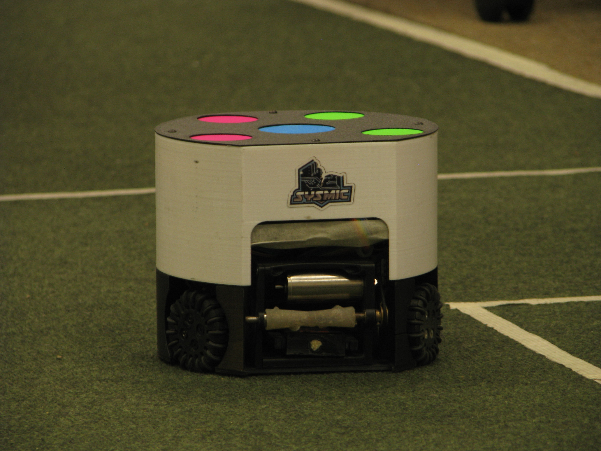
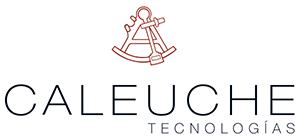

¿Qué es Sysmic?
Somos el equipo de robótica de la Universidad Técnica Federico Santa María, compitiendo en la liga RoboCup Small Size League (SSL). Nuestro objetivo es desarrollar robots autónomos capaces de jugar fútbol contra otros equipos de todo el mundo.

Auspiciadores
-

Caleuche -
DI -
IRE -
Electrónica USM -
UTFSM